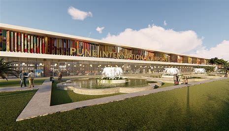
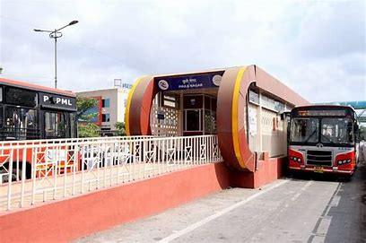
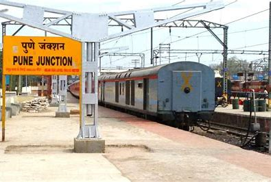
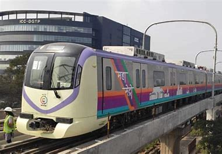
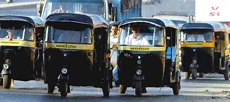

Pune Airport (IATA: PNQ, ICAO: VAPO) is an international airport and an Indian Air Force base serving the city of Pune, Maharashtra, India. It is located at Lohegaon, approximately 11 km (6.8 mi) northeast of the historic centre of Pune. The airport is a civil enclave operated by the Airports Authority of India at the western side of Lohegaon Air Force Station of the Indian Air Force. The airport is the ninth-busiest airport by passenger traffic in India. The airport serves both domestic and international flights. In financial year 2023-24, the airport handled over 9.5 million passengers
| Airline | Destination | Frequency |
|---|---|---|
| IndiGo | Mumbai | Every 3 hours |
| Air India | Delhi | Twice a day |
| SpiceJet | Bangalore | Daily |
Public buses within the city and its suburbs are operated by the Pune Mahanagar Parivahan Mahamandal Limited (PMPML). The PMPML operates the Rainbow Bus Rapid Transit System system, the first in India, in which dedicated bus lanes exists to allow buses to travel quicker through the city. Pune is the first city in India to adopt Electric Buses and the first city in India to have an Electric Bus Depot at Bhekrainagar, Hadapsar. PMPML has 13 bus depots in Pune and Pimpri-Chinchwad
| Bus Service | Route | Frequency |
|---|---|---|
| PMPML | All major routes | Every 10 mins |
| Shivneri | Pune to Mumbai | Every 30 mins |
| Citylink | Pune to Hinjewadi | Every 15 mins |
The city's main railway station is Pune Railway Station. The station is administrated by the Pune Railway Division of the Central Railways. There are many other railway stations within the urban area. Daily express trains connect Pune to major cities in the country. At Pune, there is diesel locomotive shed and electric trip shed.
| Train Service | Route | Frequency |
|---|---|---|
| Local Trains | Pune to Lonavala | Every 20 mins |
| Intercity Express | Pune to Mumbai | Every 1 hour |
| Deccan Queen | Pune to Mumbai | Daily |
Pune Metro is a currently under construction rapid transit system to serve the cities of Pune and Pimpri-Chinchwad. As of March 2018, Line 1 (Pimpri-Chinchwad - Swargate) and Line 2 (Vanaz - Ramwadi) with a combined length of 31.25 km are being constructed by Maharashtra Metro Rail Corporation Limited (MahaMetro), a 50:50 joint venture of the State and Central Governments.
| Metro Service | Route | Frequency |
|---|---|---|
| Pune Metro | Vanaz to Ramwadi | Every 10 mins |
| Line 2 | Swargate to PCMC | Every 12 mins |
The taxi is a common form of transport around the world, both as a vehicle for hire and for private use. The auto-rickshaw are especially common in countries with tropical or subtropical climates since they are usually not fully enclosed, and they are found in many developing countries because they are relatively inexpensive to own and operate.
| Taxi Service | Type | Availability |
|---|---|---|
| Ola | Sedan, Mini, Auto-rickshaw | 24/7 |
| Uber | SUV, Sedan, , Auto-rickshaw | 24/7 |
| Meru | Hatchback | 24/7 |